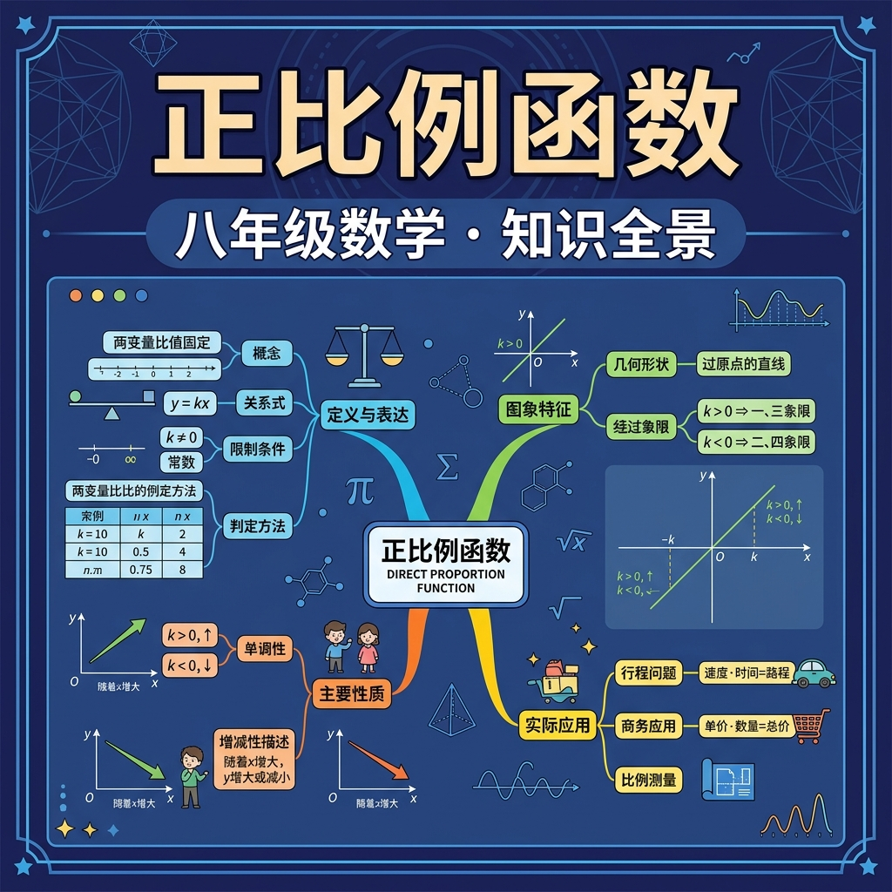

1. 下列哪个式子表示 y 与 x 成正比例关系？
2. 如果 y = kx，当 x=2 时 y=6，则 k = ？
3. 正比例函数的图象一定经过哪个点？
其中：
✅ 是正比例函数
❌ 不是正比例函数
🏋️ 即时练习：下列函数中，是正比例函数的是？
| k的范围 | 图象位置 | 变化趋势 | 所在象限 |
|---|---|---|---|
| k > 0 | 过一、三象限 | y随x增大而增大 | 第一、三象限 |
| k < 0 | 过二、四象限 | y随x增大而减小 | 第二、四象限 |
| |k|越大 | 直线越陡 | 变化越快 | — |
🏋️ 即时练习：正比例函数 y = -3x 的图象经过的象限是？
题目：出租车按 2.5 元/km 计费，设路程为 x km，费用为 y 元。
（1）写出 y 与 x 的函数关系式
解：y = 2.5x（x > 0）
（2）乘坐 8 km，需要多少钱？
解：y = 2.5 × 8 = 20（元）
🏋️ 即时练习：某工厂每小时生产零件 50 个，设生产了 x 小时，共生产 y 个零件。y 与 x 的关系是？
某共享单车平台想设计一个计费方案：骑行费用 y（元）与骑行时间 x（分钟）成正比例关系，且骑行 30 分钟收费 3 元。
1. 正比例函数 y = kx，当 k = -4，x = 3 时，y = ？
2. 若正比例函数 y=kx 的图象过点 (2, -6)，则 k = ？
3. 在坐标系中，正比例函数 y = 2x 和 y = 0.5x 的图象相比，y = 2x 的图象更？
4. 正比例函数中，如果 x 增大，y 一定增大吗？